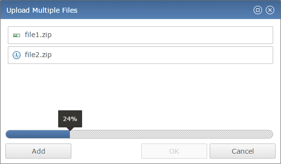

This article describes how to allow users to upload files from their local file system to the RAP server or another HTTP server. This can be done using a RAP FileUpload widget, the drag and drop API, or a FileDialog.
The
FileUpload
widget looks like a push button, but it will open the file picker dialog of the user's
browser when clicked (it wraps an HTML <input type="file"/> element).
When one or more files have been selected (indicated by a Selection event), these
files can then be sent to any URL using the submit method.
To receive a file on the server, RAP provides a service in the bundle
org.eclipse.rap.fileupload.
To use this service, create an instance of
FileUploadHandler
and obtain the upload URL from its method getUploadUrl.
Here's a minimal example that uploads a file and stores it in a temporary directory:
final DiskFileUploadReceiver receiver = new DiskFileUploadReceiver();
final FileUploadHandler uploadHandler = new FileUploadHandler( receiver );
uploadHandler.addUploadListener( new FileUploadListener() {
public void uploadProgress( FileUploadEvent event ) {}
public void uploadFailed( FileUploadEvent event ) {}
public void uploadFinished( FileUploadEvent event ) {
System.out.println( "Stored file: " + receiver.getTargetFiles()[ 0 ].getAbsolutePath() );
}
} );
final FileUpload fileUpload = new FileUpload( parent, SWT.NONE );
fileUpload.setText( "Select File" );
fileUpload.addSelectionListener( new SelectionAdapter() {
@Override
public void widgetSelected( SelectionEvent e ) {
fileUpload.submit( uploadHandler.getUploadUrl() );
}
} );
To upload multiple files at once, create the FileUpload with the SWT.MULTI flag. The files are stored in the temporary directory indefinitely, so you should take care to delete them once they are no longer needed.
Modern browsers allow selecting a file from the file system using drag and drop. In RAP this feature has been integrated into the SWT drag and drop API. To make a control a target for file drop and drop, create an instance of DropTarget with a ClientFileTransfer. The drop event data will the contain an array of ClientFile objects:
DropTarget dropTarget = new DropTarget( control, DND.DROP_MOVE );
dropTarget.setTransfer( new Transfer[] { ClientFileTransfer.getInstance() } );
dropTarget.addDropListener( new DropTargetAdapter() {
@Override
public void drop( DropTargetEvent event ) {
handleFileDrop( ( ClientFile[] )event.data );
}
} );
Note that unlike normal
drag gestures, the drag feedback (the icon attached to
the mouse cursor) is rendered by the operating system and may therefore look and behave
different than usual in RAP. Also, the drop operation will always be move, even when
the user holds a modifier key.
The ClientFile objects represent the files selected on the client, but they are not uploaded yet. To do so, you have to use the ClientFileUploader service and, like with the FileUpload widget above, a FileUploadHandler:
private void handleFileDrop( ClientFile[] files ) {
final DiskFileUploadReceiver receiver = new DiskFileUploadReceiver();
final FileUploadHandler uploadHandler = new FileUploadHandler( receiver );
uploadHandler.addUploadListener( new FileUploadListener() {
public void uploadProgress( FileUploadEvent event ) {}
public void uploadFailed( FileUploadEvent event ) {}
public void uploadFinished( FileUploadEvent event ) {
System.out.println( "Stored file: " + receiver.getTargetFiles()[ 0 ].getAbsolutePath() );
}
} );
RWT.getClient().getService( ClientFileUploader.class ).submit( uploadHandler.getUploadUrl(), files );
}
This is basically the all-in-one solution. The FileDialog provides an SWT compatible API that allows the user to select one or multiple files for the application to open. Once a file has been selected using the FileUpload (file picker) or file drag and drop, they are uploaded immediately. The dialog shows the upload progress (using ServerPush) and - unless canceled - can only be closed once all uploads are complete.

The FileDialog can be used in RAP almost like in SWT, but there are some differences:
open(i.e. upload). Creating the FileDialog with the SWT.SAVE flag has no effect. However, SWT.MULTI is supported.
Like all dialogs, the FileDialog has to be opened differently in the JEE compatibility mode:
final FileDialog fileDialog = new FileDialog( parent, SWT.APPLICATION_MODAL );
// SWT compatibility mode:
System.out.println( "Stored file: " + fileDialog.open() );
// JEE compatibility mode:
fileDialog.open( new DialogCallback() {
public void dialogClosed( int returnCode ) {
System.out.println( "Stored file: " + fileDialog.getFileName() );
}
} );